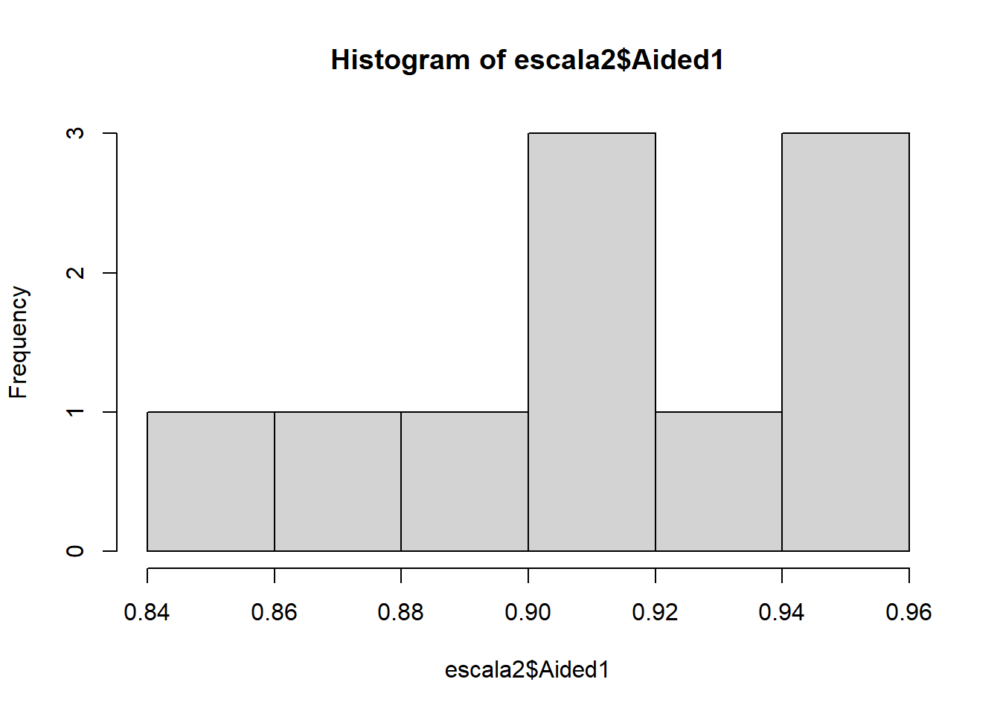
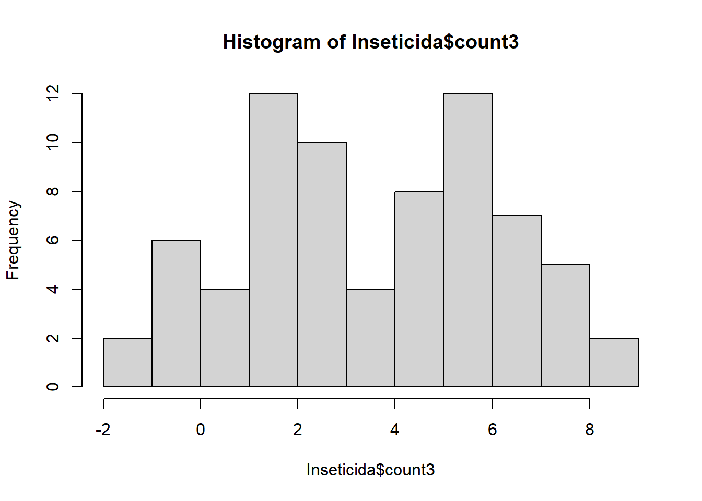

library(gsheet)
mg <- gsheet2tbl("https://docs.google.com/spreadsheets/d/1bq2N19DcZdtax2fQW9OHSGMR0X2__Z9T/edit#gid=983033137")Aula 6
Aula 6
Importar planilha de dados diversos
Vizualizar
library(tidyverse)── Attaching core tidyverse packages ──────────────────────── tidyverse 2.0.0 ──
✔ dplyr 1.1.4 ✔ readr 2.1.5
✔ forcats 1.0.0 ✔ stringr 1.5.1
✔ ggplot2 3.5.0 ✔ tibble 3.2.1
✔ lubridate 1.9.3 ✔ tidyr 1.3.1
✔ purrr 1.0.2
── Conflicts ────────────────────────────────────────── tidyverse_conflicts() ──
✖ dplyr::filter() masks stats::filter()
✖ dplyr::lag() masks stats::lag()
ℹ Use the conflicted package (<http://conflicted.r-lib.org/>) to force all conflicts to become errorslibrary(ggthemes)
mg |>
ggplot(aes(trat, comp))+
geom_boxplot(fill = "gray")+
theme_few()Teste t para dois grupos de médias independentes
#Passar os dados para o formato largo
mg2 <- mg |>
pivot_wider(names_from = trat, values_from = comp)
mg2# A tibble: 10 × 3
rep Mg2 control
<dbl> <dbl> <dbl>
1 1 9 13.7
2 2 12.5 15.9
3 3 10 15.7
4 4 8 14.2
5 5 13.2 15.9
6 6 11 16.5
7 7 10.8 18
8 8 9.5 14.4
9 9 10.8 16.4
10 10 10.4 16 #Presupposes: normality and homogeneity of variance
shapiro.test(mg2$control) #No teste de shapiro a H0 é de que a distribuição é normal
Shapiro-Wilk normality test
data: mg2$control
W = 0.93886, p-value = 0.5404hist(mg2$control)
shapiro.test(mg2$Mg2)
Shapiro-Wilk normality test
data: mg2$Mg2
W = 0.97269, p-value = 0.9146hist(mg2$Mg2)
var.test(mg2$control, mg2$Mg2)
F test to compare two variances
data: mg2$control and mg2$Mg2
F = 0.67654, num df = 9, denom df = 9, p-value = 0.5698
alternative hypothesis: true ratio of variances is not equal to 1
95 percent confidence interval:
0.1680428 2.7237436
sample estimates:
ratio of variances
0.6765394 qqnorm(mg2$control)
qqline(mg2$control)
#T test
teste1 <- t.test(mg2$control, mg2$Mg2) #Pode usar 'var.equal = FALSE' quando a variância for heterogêneaReportar o resultado
library(report)
report(teste1)Warning: Function `format_text()` is deprecated and will be removed in a future
release. Please use `text_format()` instead.Effect sizes were labelled following Cohen's (1988) recommendations.
The Welch Two Sample t-test testing the difference between mg2$control and
mg2$Mg2 (mean of x = 15.68, mean of y = 10.52) suggests that the effect is
positive, statistically significant, and large (difference = 5.16, 95% CI
[3.83, 6.49], t(17.35) = 8.15, p < .001; Cohen's d = 3.65, 95% CI [2.14, 5.12])Teste t para dois grupos de médias dependentes
escala <- gsheet2tbl("https://docs.google.com/spreadsheets/d/1bq2N19DcZdtax2fQW9OHSGMR0X2__Z9T/edit#gid=1729131173")
#Vizualizar
escala |>
ggplot(aes(assessment, acuracia))+
geom_boxplot(fill = "gray")+
theme_few()#Passar os dados para o formato largo
escala2 <- escala |>
select(assessment, rater, acuracia) |>
pivot_wider(names_from = assessment, values_from = acuracia)
escala2# A tibble: 10 × 3
rater Unaided Aided1
<chr> <dbl> <dbl>
1 A 0.81 0.91
2 B 0.72 0.91
3 C 0.4 0.91
4 D 0.82 0.96
5 E 0.75 0.96
6 F 0.45 0.9
7 G 0.81 0.85
8 H 0.78 0.88
9 I 0.78 0.95
10 J 0.5 0.94#Presupposes: normality and homogeneity of variance
shapiro.test(escala2$Unaided) #No teste de shapiro a H0 é de que a distribuição é normal
Shapiro-Wilk normality test
data: escala2$Unaided
W = 0.7748, p-value = 0.007155hist(escala2$Unaided)
qqnorm(escala2$Unaided)
qqline(escala2$Unaided)
shapiro.test(escala2$Aided1)
Shapiro-Wilk normality test
data: escala2$Aided1
W = 0.92852, p-value = 0.4335hist(escala2$Aided1)
qqnorm(escala2$Aided1)
qqline(escala2$Aided1)
#Homogeneidade de variância
var.test(escala2$Unaided, escala2$Aided1) #Ho é que a variância é homogênea
F test to compare two variances
data: escala2$Unaided and escala2$Aided1
F = 20.978, num df = 9, denom df = 9, p-value = 0.000106
alternative hypothesis: true ratio of variances is not equal to 1
95 percent confidence interval:
5.210754 84.459185
sample estimates:
ratio of variances
20.97847 #T test
teste2 <- t.test(escala2$Unaided, escala2$Aided1,
paired = TRUE,
var.equal = FALSE) #Usar 'paired = TRUE' quando o teste t for pareado (média dependentes) e 'var.equal = FALSE' quando a variância for heterogêneanea
teste2
Paired t-test
data: escala2$Unaided and escala2$Aided1
t = -4.4214, df = 9, p-value = 0.001668
alternative hypothesis: true mean difference is not equal to 0
95 percent confidence interval:
-0.3552353 -0.1147647
sample estimates:
mean difference
-0.235 report(teste2)Warning: Function `format_text()` is deprecated and will be removed in a future
release. Please use `text_format()` instead.Effect sizes were labelled following Cohen's (1988) recommendations.
The Paired t-test testing the difference between escala2$Unaided and
escala2$Aided1 (mean difference = -0.23) suggests that the effect is negative,
statistically significant, and large (difference = -0.23, 95% CI [-0.36,
-0.11], t(9) = -4.42, p = 0.002; Cohen's d = -1.40, 95% CI [-2.27, -0.49])Teste T não paramétrico
escala_np <- gsheet2tbl("https://docs.google.com/spreadsheets/d/1bq2N19DcZdtax2fQW9OHSGMR0X2__Z9T/edit#gid=1729131173")
#Vizualizar
escala_np |>
ggplot(aes(assessment, acuracia))+
geom_boxplot(fill = "gray")+
theme_few()
#Passar os dados para o formato largo
escala_np2 <- escala_np |>
select (assessment, rater, acuracia) |>
pivot_wider(names_from = assessment, values_from = acuracia)
escala_np2# A tibble: 10 × 3
rater Unaided Aided1
<chr> <dbl> <dbl>
1 A 0.81 0.91
2 B 0.72 0.91
3 C 0.4 0.91
4 D 0.82 0.96
5 E 0.75 0.96
6 F 0.45 0.9
7 G 0.81 0.85
8 H 0.78 0.88
9 I 0.78 0.95
10 J 0.5 0.94#Presupposes: normality and homogeneity of variance
shapiro.test(escala_np2$Unaided) #No teste de shapiro a H0 é de que a distribuição é normal
Shapiro-Wilk normality test
data: escala_np2$Unaided
W = 0.7748, p-value = 0.007155hist(escala_np2$Unaided)
qqnorm(escala_np2$Unaided)
qqline(escala_np2$Unaided)
shapiro.test(escala_np2$Aided1)
Shapiro-Wilk normality test
data: escala_np2$Aided1
W = 0.92852, p-value = 0.4335hist(escala_np2$Aided1)
qqnorm(escala_np2$Aided1)
qqline(escala_np2$Aided1)#Equivalente ao teste t não paramétrico = teste wilcox
teste3 <- wilcox.test(escala_np2$Unaided, escala_np2$Aided1, paired = TRUE)Warning in wilcox.test.default(escala_np2$Unaided, escala_np2$Aided1, paired =
TRUE): não é possível computar o valor de p exato com o de desempateteste3
Wilcoxon signed rank test with continuity correction
data: escala_np2$Unaided and escala_np2$Aided1
V = 0, p-value = 0.005889
alternative hypothesis: true location shift is not equal to 0micelial <- gsheet2tbl("https://docs.google.com/spreadsheets/d/1bq2N19DcZdtax2fQW9OHSGMR0X2__Z9T/edit#gid=959387827")
#Vizualizar
micelial |>
ggplot(aes(especie, tcm))+
geom_boxplot(fill = "gray")+
geom_jitter(width = 0.1, size = 2)+
theme_few()
anova_micelial <- aov(tcm ~ especie, data = micelial)
anova_micelialCall:
aov(formula = tcm ~ especie, data = micelial)
Terms:
especie Residuals
Sum of Squares 1.4695800 0.4679167
Deg. of Freedom 4 25
Residual standard error: 0.1368089
Estimated effects may be unbalancedsummary(anova_micelial) Df Sum Sq Mean Sq F value Pr(>F)
especie 4 1.4696 0.3674 19.63 2.03e-07 ***
Residuals 25 0.4679 0.0187
---
Signif. codes: 0 '***' 0.001 '**' 0.01 '*' 0.05 '.' 0.1 ' ' 1anova(anova_micelial)Analysis of Variance Table
Response: tcm
Df Sum Sq Mean Sq F value Pr(>F)
especie 4 1.46958 0.36739 19.629 2.028e-07 ***
Residuals 25 0.46792 0.01872
---
Signif. codes: 0 '***' 0.001 '**' 0.01 '*' 0.05 '.' 0.1 ' ' 1anova_micelial2 <- lm(tcm ~ especie, data = micelial)
anova_micelial2
Call:
lm(formula = tcm ~ especie, data = micelial)
Coefficients:
(Intercept) especieFaus especieFcor especieFgra especieFmer
1.572 -0.335 -0.250 -0.660 -0.145 summary(anova_micelial2)
Call:
lm(formula = tcm ~ especie, data = micelial)
Residuals:
Min 1Q Median 3Q Max
-0.23667 -0.09667 0.01583 0.08833 0.28333
Coefficients:
Estimate Std. Error t value Pr(>|t|)
(Intercept) 1.57167 0.05585 28.140 < 2e-16 ***
especieFaus -0.33500 0.07899 -4.241 0.000266 ***
especieFcor -0.25000 0.07899 -3.165 0.004047 **
especieFgra -0.66000 0.07899 -8.356 1.05e-08 ***
especieFmer -0.14500 0.07899 -1.836 0.078317 .
---
Signif. codes: 0 '***' 0.001 '**' 0.01 '*' 0.05 '.' 0.1 ' ' 1
Residual standard error: 0.1368 on 25 degrees of freedom
Multiple R-squared: 0.7585, Adjusted R-squared: 0.7199
F-statistic: 19.63 on 4 and 25 DF, p-value: 2.028e-07anova(anova_micelial2)Analysis of Variance Table
Response: tcm
Df Sum Sq Mean Sq F value Pr(>F)
especie 4 1.46958 0.36739 19.629 2.028e-07 ***
Residuals 25 0.46792 0.01872
---
Signif. codes: 0 '***' 0.001 '**' 0.01 '*' 0.05 '.' 0.1 ' ' 1Modificando os dados p termos variância significativa
micelial2 <- gsheet2tbl("https://docs.google.com/spreadsheets/d/1bq2N19DcZdtax2fQW9OHSGMR0X2__Z9T/edit#gid=959387827")
#Vizualizar
micelial2 |>
ggplot(aes(especie, tcm))+
#geom_boxplot()+
geom_jitter(widh = 0.05, size = 2)Warning in geom_jitter(widh = 0.05, size = 2): Ignoring unknown parameters:
`widh`
aov_micelial2 <- aov(tcm ~ especie, data = micelial2)
aov_micelial2Call:
aov(formula = tcm ~ especie, data = micelial2)
Terms:
especie Residuals
Sum of Squares 1.4695800 0.4679167
Deg. of Freedom 4 25
Residual standard error: 0.1368089
Estimated effects may be unbalancedsummary(aov_micelial2) Df Sum Sq Mean Sq F value Pr(>F)
especie 4 1.4696 0.3674 19.63 2.03e-07 ***
Residuals 25 0.4679 0.0187
---
Signif. codes: 0 '***' 0.001 '**' 0.01 '*' 0.05 '.' 0.1 ' ' 1anova(aov_micelial2)Analysis of Variance Table
Response: tcm
Df Sum Sq Mean Sq F value Pr(>F)
especie 4 1.46958 0.36739 19.629 2.028e-07 ***
Residuals 25 0.46792 0.01872
---
Signif. codes: 0 '***' 0.001 '**' 0.01 '*' 0.05 '.' 0.1 ' ' 1lm_micelial2 <- lm(tcm ~ especie, data = micelial2)
lm_micelial2
Call:
lm(formula = tcm ~ especie, data = micelial2)
Coefficients:
(Intercept) especieFaus especieFcor especieFgra especieFmer
1.572 -0.335 -0.250 -0.660 -0.145 summary(lm_micelial2)
Call:
lm(formula = tcm ~ especie, data = micelial2)
Residuals:
Min 1Q Median 3Q Max
-0.23667 -0.09667 0.01583 0.08833 0.28333
Coefficients:
Estimate Std. Error t value Pr(>|t|)
(Intercept) 1.57167 0.05585 28.140 < 2e-16 ***
especieFaus -0.33500 0.07899 -4.241 0.000266 ***
especieFcor -0.25000 0.07899 -3.165 0.004047 **
especieFgra -0.66000 0.07899 -8.356 1.05e-08 ***
especieFmer -0.14500 0.07899 -1.836 0.078317 .
---
Signif. codes: 0 '***' 0.001 '**' 0.01 '*' 0.05 '.' 0.1 ' ' 1
Residual standard error: 0.1368 on 25 degrees of freedom
Multiple R-squared: 0.7585, Adjusted R-squared: 0.7199
F-statistic: 19.63 on 4 and 25 DF, p-value: 2.028e-07anova(lm_micelial2)Analysis of Variance Table
Response: tcm
Df Sum Sq Mean Sq F value Pr(>F)
especie 4 1.46958 0.36739 19.629 2.028e-07 ***
Residuals 25 0.46792 0.01872
---
Signif. codes: 0 '***' 0.001 '**' 0.01 '*' 0.05 '.' 0.1 ' ' 1Testes de comparações
#Demonstrando os agrupamentos de médias
install.packages("emmeans", repos = "https://cran.r-project.org")Installing package into 'C:/Users/david/AppData/Local/R/win-library/4.3'
(as 'lib' is unspecified)package 'emmeans' successfully unpacked and MD5 sums checked
The downloaded binary packages are in
C:\Users\david\AppData\Local\Temp\RtmpYxj5iP\downloaded_packagesinstall.packages("multcomp", repos = "https://cran.r-project.org")Installing package into 'C:/Users/david/AppData/Local/R/win-library/4.3'
(as 'lib' is unspecified)package 'multcomp' successfully unpacked and MD5 sums checked
The downloaded binary packages are in
C:\Users\david\AppData\Local\Temp\RtmpYxj5iP\downloaded_packagesinstall.packages("multicompView", repos = "https://cran.r-project.org")Installing package into 'C:/Users/david/AppData/Local/R/win-library/4.3'
(as 'lib' is unspecified)Warning: package 'multicompView' is not available for this version of R
A version of this package for your version of R might be available elsewhere,
see the ideas at
https://cran.r-project.org/doc/manuals/r-patched/R-admin.html#Installing-packageslibrary(emmeans)Welcome to emmeans.
Caution: You lose important information if you filter this package's results.
See '? untidy'library(multcomp)Carregando pacotes exigidos: mvtnormCarregando pacotes exigidos: survivalCarregando pacotes exigidos: TH.dataCarregando pacotes exigidos: MASS
Attaching package: 'MASS'The following object is masked from 'package:dplyr':
select
Attaching package: 'TH.data'The following object is masked from 'package:MASS':
geyserlibrary(multcompView)
medias_lm <- emmeans(lm_micelial2, ~ especie)
medias_lm especie emmean SE df lower.CL upper.CL
Fasi 1.572 0.0559 25 1.457 1.69
Faus 1.237 0.0559 25 1.122 1.35
Fcor 1.322 0.0559 25 1.207 1.44
Fgra 0.912 0.0559 25 0.797 1.03
Fmer 1.427 0.0559 25 1.312 1.54
Confidence level used: 0.95 cld(medias_lm) especie emmean SE df lower.CL upper.CL .group
Fgra 0.912 0.0559 25 0.797 1.03 1
Faus 1.237 0.0559 25 1.122 1.35 2
Fcor 1.322 0.0559 25 1.207 1.44 2
Fmer 1.427 0.0559 25 1.312 1.54 23
Fasi 1.572 0.0559 25 1.457 1.69 3
Confidence level used: 0.95
P value adjustment: tukey method for comparing a family of 5 estimates
significance level used: alpha = 0.05
NOTE: If two or more means share the same grouping symbol,
then we cannot show them to be different.
But we also did not show them to be the same. #Pressuposições para o novo conjunto de dados
hist(lm_micelial2$residuals)
shapiro.test(lm_micelial2$residuals)
Shapiro-Wilk normality test
data: lm_micelial2$residuals
W = 0.9821, p-value = 0.8782bartlett.test(tcm ~ especie, data = micelial2) # H0 é que a variâncias são homogêneas
Bartlett test of homogeneity of variances
data: tcm by especie
Bartlett's K-squared = 4.4367, df = 4, p-value = 0.3501#Usando o pacote 'DHARMa'
install.packages("DHARMA", repos = "https://cran.r-project.org")Installing package into 'C:/Users/david/AppData/Local/R/win-library/4.3'
(as 'lib' is unspecified)Warning: package 'DHARMA' is not available for this version of R
A version of this package for your version of R might be available elsewhere,
see the ideas at
https://cran.r-project.org/doc/manuals/r-patched/R-admin.html#Installing-packagesWarning: Perhaps you meant 'DHARMa' ?library(DHARMa)This is DHARMa 0.4.6. For overview type '?DHARMa'. For recent changes, type news(package = 'DHARMa')presupposes <- plot(simulateResiduals(lm_micelial2))
O pacote ‘performance’ também roda as presuposições
library(performance)
check_normality(lm_micelial2)OK: residuals appear as normally distributed (p = 0.878).check_heteroscedasticity(lm_micelial2)OK: Error variance appears to be homoscedastic (p = 0.880).plot_presup <- check_model(lm_micelial2)
plot_presup
Aula 6.1
Inseticida <- InsectSprays
Inseticida |>
count(spray) spray n
1 A 12
2 B 12
3 C 12
4 D 12
5 E 12
6 F 12Inseticida |>
ggplot(aes(spray, count))+
geom_boxplot(fill = "gray")+
geom_jitter(width = 0.1, size = 2)+
theme_classic()+
scale_fill_colorblind()
m1 <- lm (count ~ spray, data = Inseticida)
anova(m1)Analysis of Variance Table
Response: count
Df Sum Sq Mean Sq F value Pr(>F)
spray 5 2668.8 533.77 34.702 < 2.2e-16 ***
Residuals 66 1015.2 15.38
---
Signif. codes: 0 '***' 0.001 '**' 0.01 '*' 0.05 '.' 0.1 ' ' 1summary(m1)
Call:
lm(formula = count ~ spray, data = Inseticida)
Residuals:
Min 1Q Median 3Q Max
-8.333 -1.958 -0.500 1.667 9.333
Coefficients:
Estimate Std. Error t value Pr(>|t|)
(Intercept) 14.5000 1.1322 12.807 < 2e-16 ***
sprayB 0.8333 1.6011 0.520 0.604
sprayC -12.4167 1.6011 -7.755 7.27e-11 ***
sprayD -9.5833 1.6011 -5.985 9.82e-08 ***
sprayE -11.0000 1.6011 -6.870 2.75e-09 ***
sprayF 2.1667 1.6011 1.353 0.181
---
Signif. codes: 0 '***' 0.001 '**' 0.01 '*' 0.05 '.' 0.1 ' ' 1
Residual standard error: 3.922 on 66 degrees of freedom
Multiple R-squared: 0.7244, Adjusted R-squared: 0.7036
F-statistic: 34.7 on 5 and 66 DF, p-value: < 2.2e-16hist(m1$residuals)
shapiro.test(m1$residuals)
Shapiro-Wilk normality test
data: m1$residuals
W = 0.96006, p-value = 0.02226qqnorm(m1$residuals)
qqline(m1$residuals)
bartlett.test(count ~ spray,
data = Inseticida)
Bartlett test of homogeneity of variances
data: count by spray
Bartlett's K-squared = 25.96, df = 5, p-value = 9.085e-05library(performance)
check_normality(m1)Warning: Non-normality of residuals detected (p = 0.022).check_heteroscedasticity(m1)Warning: Heteroscedasticity (non-constant error variance) detected (p < .001).Tranformando os dados
Inseticida <- Inseticida |>
mutate(count2 = sqrt(count))
Inseticida |>
ggplot(aes(spray, count2, fill= spray))+
geom_boxplot()+
geom_jitter(width = 0.05, size = 2)+
theme_few()+
scale_fill_few()+
theme(legend.title = element_blank(), legend.position = "none")
m2 <- lm (count2 ~ spray, data = Inseticida)
anova(m2)Analysis of Variance Table
Response: count2
Df Sum Sq Mean Sq F value Pr(>F)
spray 5 88.438 17.6876 44.799 < 2.2e-16 ***
Residuals 66 26.058 0.3948
---
Signif. codes: 0 '***' 0.001 '**' 0.01 '*' 0.05 '.' 0.1 ' ' 1summary(m2)
Call:
lm(formula = count2 ~ spray, data = Inseticida)
Residuals:
Min 1Q Median 3Q Max
-1.24486 -0.39970 -0.01902 0.42661 1.40089
Coefficients:
Estimate Std. Error t value Pr(>|t|)
(Intercept) 3.7607 0.1814 20.733 < 2e-16 ***
sprayB 0.1160 0.2565 0.452 0.653
sprayC -2.5158 0.2565 -9.807 1.64e-14 ***
sprayD -1.5963 0.2565 -6.223 3.80e-08 ***
sprayE -1.9512 0.2565 -7.606 1.34e-10 ***
sprayF 0.2579 0.2565 1.006 0.318
---
Signif. codes: 0 '***' 0.001 '**' 0.01 '*' 0.05 '.' 0.1 ' ' 1
Residual standard error: 0.6283 on 66 degrees of freedom
Multiple R-squared: 0.7724, Adjusted R-squared: 0.7552
F-statistic: 44.8 on 5 and 66 DF, p-value: < 2.2e-16hist(m2$residuals)
shapiro.test(m2$residuals)
Shapiro-Wilk normality test
data: m2$residuals
W = 0.98721, p-value = 0.6814qqnorm(m2$residuals)
qqline(m2$residuals)
bartlett.test(count2 ~ spray,
data = Inseticida)
Bartlett test of homogeneity of variances
data: count2 by spray
Bartlett's K-squared = 3.7525, df = 5, p-value = 0.5856library(performance)
check_normality(m2)OK: residuals appear as normally distributed (p = 0.681).check_heteroscedasticity(m2)OK: Error variance appears to be homoscedastic (p = 0.854).plot(simulateResiduals(m2))
Agrupamento
medias1 <- emmeans(m1, ~ spray)
cld(medias1) spray emmean SE df lower.CL upper.CL .group
C 2.08 1.13 66 -0.177 4.34 1
E 3.50 1.13 66 1.240 5.76 1
D 4.92 1.13 66 2.656 7.18 1
A 14.50 1.13 66 12.240 16.76 2
B 15.33 1.13 66 13.073 17.59 2
F 16.67 1.13 66 14.406 18.93 2
Confidence level used: 0.95
P value adjustment: tukey method for comparing a family of 6 estimates
significance level used: alpha = 0.05
NOTE: If two or more means share the same grouping symbol,
then we cannot show them to be different.
But we also did not show them to be the same. cld1 <- cld(emmeans(m1, ~ spray),alpha = 0.01, letters = LETTERS)
cld1 spray emmean SE df lower.CL upper.CL .group
C 2.08 1.13 66 -0.177 4.34 1
E 3.50 1.13 66 1.240 5.76 1
D 4.92 1.13 66 2.656 7.18 1
A 14.50 1.13 66 12.240 16.76 2
B 15.33 1.13 66 13.073 17.59 2
F 16.67 1.13 66 14.406 18.93 2
Confidence level used: 0.95
P value adjustment: tukey method for comparing a family of 6 estimates
significance level used: alpha = 0.01
NOTE: If two or more means share the same grouping symbol,
then we cannot show them to be different.
But we also did not show them to be the same. medias2 <- emmeans(m2, ~ spray)
cld(medias2, Letters = letters) spray emmean SE df lower.CL upper.CL .group
C 1.24 0.181 66 0.883 1.61 a
E 1.81 0.181 66 1.447 2.17 ab
D 2.16 0.181 66 1.802 2.53 b
A 3.76 0.181 66 3.399 4.12 c
B 3.88 0.181 66 3.514 4.24 c
F 4.02 0.181 66 3.656 4.38 c
Confidence level used: 0.95
P value adjustment: tukey method for comparing a family of 6 estimates
significance level used: alpha = 0.05
NOTE: If two or more means share the same grouping symbol,
then we cannot show them to be different.
But we also did not show them to be the same. Alternativa 2 - não paramétrico
library(agricolae)
kruskal.test(count ~ spray, data = Inseticida)
Kruskal-Wallis rank sum test
data: count by spray
Kruskal-Wallis chi-squared = 54.691, df = 5, p-value = 1.511e-10m3 <- kruskal(Inseticida$count,
Inseticida$spray,
group = TRUE)
m3$statistics
Chisq Df p.chisq t.value MSD
54.69134 5 1.510845e-10 1.996564 8.462804
$parameters
test p.ajusted name.t ntr alpha
Kruskal-Wallis none Inseticida$spray 6 0.05
$means
Inseticida.count rank std r Min Max Q25 Q50 Q75
A 14.500000 52.16667 4.719399 12 7 23 11.50 14.0 17.75
B 15.333333 54.83333 4.271115 12 7 21 12.50 16.5 17.50
C 2.083333 11.45833 1.975225 12 0 7 1.00 1.5 3.00
D 4.916667 25.58333 2.503028 12 2 12 3.75 5.0 5.00
E 3.500000 19.33333 1.732051 12 1 6 2.75 3.0 5.00
F 16.666667 55.62500 6.213378 12 9 26 12.50 15.0 22.50
$comparison
NULL
$groups
Inseticida$count groups
F 55.62500 a
B 54.83333 a
A 52.16667 a
D 25.58333 b
E 19.33333 bc
C 11.45833 c
attr(,"class")
[1] "group"Alternativa 3 - GLMs
m4 <- glm(count ~ spray,
family = poisson,
data = Inseticida)
?glmstarting httpd help server ... donem4
Call: glm(formula = count ~ spray, family = poisson, data = Inseticida)
Coefficients:
(Intercept) sprayB sprayC sprayD sprayE sprayF
2.67415 0.05588 -1.94018 -1.08152 -1.42139 0.13926
Degrees of Freedom: 71 Total (i.e. Null); 66 Residual
Null Deviance: 409
Residual Deviance: 98.33 AIC: 376.6summary(m4)
Call:
glm(formula = count ~ spray, family = poisson, data = Inseticida)
Coefficients:
Estimate Std. Error z value Pr(>|z|)
(Intercept) 2.67415 0.07581 35.274 < 2e-16 ***
sprayB 0.05588 0.10574 0.528 0.597
sprayC -1.94018 0.21389 -9.071 < 2e-16 ***
sprayD -1.08152 0.15065 -7.179 7.03e-13 ***
sprayE -1.42139 0.17192 -8.268 < 2e-16 ***
sprayF 0.13926 0.10367 1.343 0.179
---
Signif. codes: 0 '***' 0.001 '**' 0.01 '*' 0.05 '.' 0.1 ' ' 1
(Dispersion parameter for poisson family taken to be 1)
Null deviance: 409.041 on 71 degrees of freedom
Residual deviance: 98.329 on 66 degrees of freedom
AIC: 376.59
Number of Fisher Scoring iterations: 5anova(m4)Analysis of Deviance Table
Model: poisson, link: log
Response: count
Terms added sequentially (first to last)
Df Deviance Resid. Df Resid. Dev
NULL 71 409.04
spray 5 310.71 66 98.33plot(simulateResiduals(m4))
medias4 <- emmeans(m4, ~ spray, type = "response")
medias4 spray rate SE df asymp.LCL asymp.UCL
A 14.50 1.099 Inf 12.50 16.82
B 15.33 1.130 Inf 13.27 17.72
C 2.08 0.417 Inf 1.41 3.08
D 4.92 0.640 Inf 3.81 6.35
E 3.50 0.540 Inf 2.59 4.74
F 16.67 1.179 Inf 14.51 19.14
Confidence level used: 0.95
Intervals are back-transformed from the log scale cld(medias4) spray rate SE df asymp.LCL asymp.UCL .group
C 2.08 0.417 Inf 1.41 3.08 1
E 3.50 0.540 Inf 2.59 4.74 12
D 4.92 0.640 Inf 3.81 6.35 2
A 14.50 1.099 Inf 12.50 16.82 3
B 15.33 1.130 Inf 13.27 17.72 3
F 16.67 1.179 Inf 14.51 19.14 3
Confidence level used: 0.95
Intervals are back-transformed from the log scale
P value adjustment: tukey method for comparing a family of 6 estimates
Tests are performed on the log scale
significance level used: alpha = 0.05
NOTE: If two or more means share the same grouping symbol,
then we cannot show them to be different.
But we also did not show them to be the same. Transformação BoxCox
library(MASS)
b <- boxcox(lm(Inseticida$count+0.1 ~ 1))lambda <- b$x[which.max(b$y)]
lambda = 0.5
Inseticida$count3 <-(Inseticida$count ^ lambda - 1) / lambda
hist(Inseticida$count3)
Inseticida$count3 [1] 4.3245553 3.2915026 6.9442719 5.4833148 5.4833148 4.9282032
[7] 4.3245553 7.5916630 6.2462113 6.9442719 5.4833148 5.2111026
[13] 4.6332496 6.2462113 7.1651514 4.6332496 6.0000000 5.4833148
[19] 6.2462113 6.2462113 6.7177979 7.1651514 3.2915026 5.2111026
[25] -2.0000000 0.0000000 3.2915026 0.8284271 1.4641016 0.0000000
[31] 0.8284271 0.0000000 1.4641016 -2.0000000 0.0000000 2.0000000
[37] 1.4641016 2.4721360 4.9282032 2.8989795 2.0000000 1.4641016
[43] 2.4721360 2.4721360 2.4721360 2.4721360 0.8284271 2.0000000
[49] 1.4641016 2.4721360 1.4641016 2.4721360 1.4641016 2.8989795
[55] 0.0000000 0.0000000 1.4641016 0.8284271 2.8989795 2.0000000
[61] 4.6332496 4.0000000 5.7459667 7.3808315 5.7459667 6.0000000
[67] 5.2111026 4.3245553 8.1980390 8.1980390 7.7979590 5.2111026Anova fatorial
library(gsheet)
fungicida <- gsheet2tbl("https://docs.google.com/spreadsheets/d/1bq2N19DcZdtax2fQW9OHSGMR0X2__Z9T/edit#gid=2023059672")
fungicida$dose <- as.factor(fungicida$dose)
fungicida |>
ggplot(aes(treat,severity, color = dose))+
#geom_boxplot()+
geom_jitter(width = 0.2, size = 2.5)+
#facet_wrap(~dose)+
theme_few()+
scale_fill_few()+
theme(legend.title = element_blank(), legend.position = "none")
mf <- lm(severity ~ treat*dose, data = fungicida)
mf
Call:
lm(formula = severity ~ treat * dose, data = fungicida)
Coefficients:
(Intercept) treatTebuconazole dose2
0.2921 -0.2711 -0.2420
treatTebuconazole:dose2
0.2412 anova(mf)Analysis of Variance Table
Response: severity
Df Sum Sq Mean Sq F value Pr(>F)
treat 1 0.113232 0.113232 30.358 4.754e-05 ***
dose 1 0.073683 0.073683 19.755 0.0004077 ***
treat:dose 1 0.072739 0.072739 19.502 0.0004326 ***
Residuals 16 0.059678 0.003730
---
Signif. codes: 0 '***' 0.001 '**' 0.01 '*' 0.05 '.' 0.1 ' ' 1plot(simulateResiduals(mf))
mf_medias <- emmeans(mf, ~ treat | dose)
mf_mediasdose = 0.5:
treat emmean SE df lower.CL upper.CL
Ionic liquid 0.2921 0.0273 16 0.23420 0.3500
Tebuconazole 0.0210 0.0273 16 -0.03690 0.0789
dose = 2:
treat emmean SE df lower.CL upper.CL
Ionic liquid 0.0501 0.0273 16 -0.00781 0.1080
Tebuconazole 0.0202 0.0273 16 -0.03768 0.0781
Confidence level used: 0.95 cld(mf_medias)dose = 0.5:
treat emmean SE df lower.CL upper.CL .group
Tebuconazole 0.0210 0.0273 16 -0.03690 0.0789 1
Ionic liquid 0.2921 0.0273 16 0.23420 0.3500 2
dose = 2:
treat emmean SE df lower.CL upper.CL .group
Tebuconazole 0.0202 0.0273 16 -0.03768 0.0781 1
Ionic liquid 0.0501 0.0273 16 -0.00781 0.1080 1
Confidence level used: 0.95
significance level used: alpha = 0.05
NOTE: If two or more means share the same grouping symbol,
then we cannot show them to be different.
But we also did not show them to be the same. mf_medias_linha <- emmeans(mf, ~ dose | treat)
mf_medias_linhatreat = Ionic liquid:
dose emmean SE df lower.CL upper.CL
0.5 0.2921 0.0273 16 0.23420 0.3500
2 0.0501 0.0273 16 -0.00781 0.1080
treat = Tebuconazole:
dose emmean SE df lower.CL upper.CL
0.5 0.0210 0.0273 16 -0.03690 0.0789
2 0.0202 0.0273 16 -0.03768 0.0781
Confidence level used: 0.95 cld(mf_medias_linha,Letters = letters)treat = Ionic liquid:
dose emmean SE df lower.CL upper.CL .group
2 0.0501 0.0273 16 -0.00781 0.1080 a
0.5 0.2921 0.0273 16 0.23420 0.3500 b
treat = Tebuconazole:
dose emmean SE df lower.CL upper.CL .group
2 0.0202 0.0273 16 -0.03768 0.0781 a
0.5 0.0210 0.0273 16 -0.03690 0.0789 a
Confidence level used: 0.95
significance level used: alpha = 0.05
NOTE: If two or more means share the same grouping symbol,
then we cannot show them to be different.
But we also did not show them to be the same.